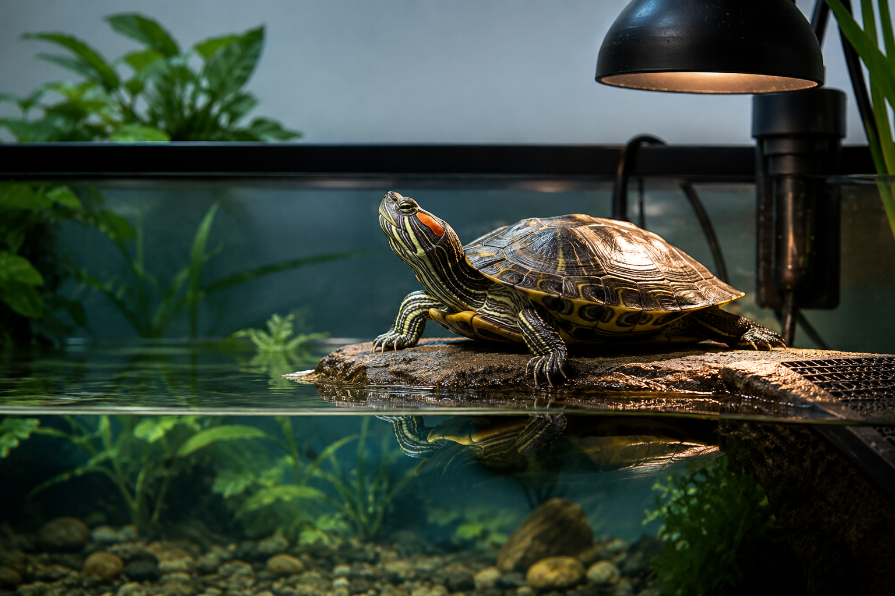

Everything you need to know before bringing home your first Red-Eared Slider—from choosing the right tank to feeding, filtration, UVB lighting and long-term care.
📖 6 min read•Last Updated: July 2026

Quick Answer
Red-Eared Sliders are long-lived aquatic turtles that require a spacious aquarium, powerful filtration, proper UVB lighting, a dry basking platform and a balanced diet. They are not low-maintenance pets, but with correct care they can thrive for several decades.
Key Takeaways
Adult turtles need large aquariums with plenty of swimming space.
A canister filter is strongly recommended.
UVB lighting is essential for healthy shell and bone growth.
Feed a varied diet instead of relying on only one food.
Turtles can live for several decades, making them a long-term commitment.
Before You Bring Home a Turtle
Red-Eared Sliders are one of the most popular pet turtles in the world, but they are also one of the most misunderstood. They are not "starter pets" that can live in a small plastic bowl. With proper care, they can live for over 30 years and require a significant long-term commitment.
Before buying a turtle, make sure you have enough space for a large aquarium, the budget for quality equipment, and the time needed for regular maintenance. Investing in the right setup from the beginning prevents many common health problems later.
Essential Equipment Checklist
Item
Why It Matters
Large Aquarium
Provides enough swimming space as your turtle grows.
Canister Filter
Keeps the water clean and reduces harmful waste.
UVB Light
Supports calcium absorption and healthy shell growth.
Basking Platform
Allows the turtle to dry completely and regulate body temperature.
Water Heater (if required)
Maintains stable water temperatures for young or sick turtles.
Daily Care Routine
Morning
Turn on the UVB and basking lights, check the water temperature, and observe your turtle for normal activity.
Feeding
Feed an age-appropriate diet consisting of quality pellets, leafy greens, and occasional protein treats. Remove uneaten food if necessary to maintain water quality.
Cleaning
Remove visible waste daily and perform partial water changes as required. Rinse filter media only in old tank water to preserve beneficial bacteria.
Weekly Checks
Inspect the shell, eyes, skin, nails, filter, heater, and UVB light. Early detection of problems makes treatment much easier.
Frequently Asked Questions
Can a Red-Eared Slider really live for 40 years?
Yes. With excellent care, many Red-Eared Sliders live well beyond 30 years, and some reach or exceed 40 years.
What is the biggest reason pet turtles die early?
Poor husbandry is the most common cause. Dirty water, lack of UVB lighting, incorrect diet, and inadequate basking conditions can lead to chronic health problems.
Do larger tanks help turtles live longer?
A larger aquarium provides better swimming space, more stable water quality, and reduces stress. While tank size alone doesn't increase lifespan, it supports better overall health.
Can I keep my turtle without a filter?
No. Red-Eared Sliders produce a large amount of waste. A powerful filter is essential to maintain clean, healthy water.